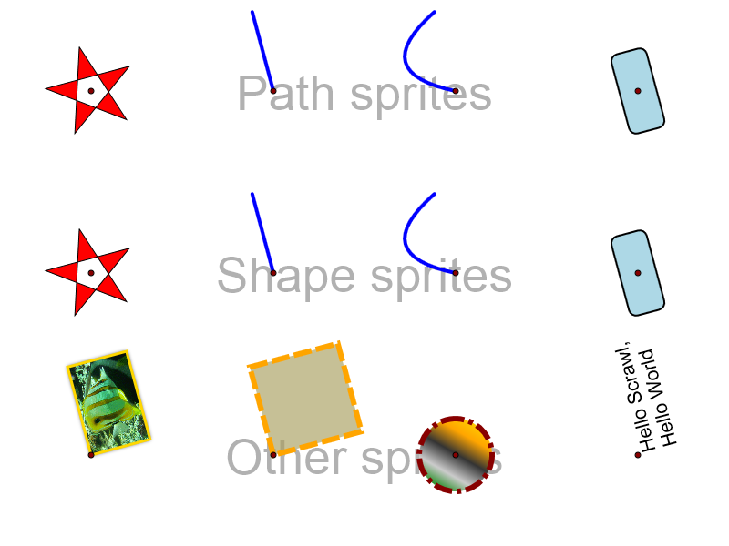

| Percentage value handles (string - 'n%') | X: -50% 150% | Y: -50% 150% |
| Absolute value handles (number - n) | X: -50 50 | Y: -50 50 |
| String value handles | X: | Y: |
| Flip values | Reverse: | Upend: |
| Scale (number - n) | 0.5 1.5 |
| Percentage value handles (string - 'n%') | X: -50% 150% | Y: -50% 150% |
| Absolute value handles (number - n) | X: -50 50 | Y: -50 50 |
| String value handles | X: | Y: |
| Flip values | Reverse: | Upend: |
| Scale (number - n) | 0.5 1.5 |
Scenario: ???
Actions:
Known browser issues: ???
Result images:
